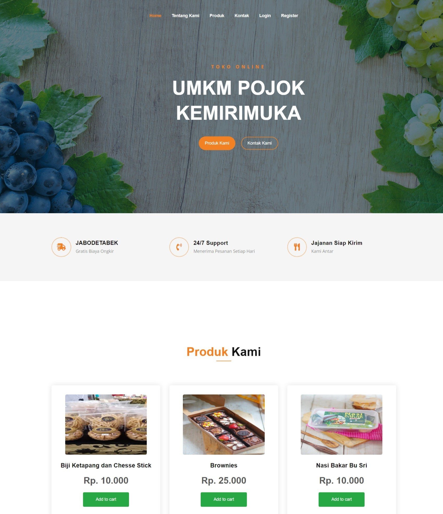
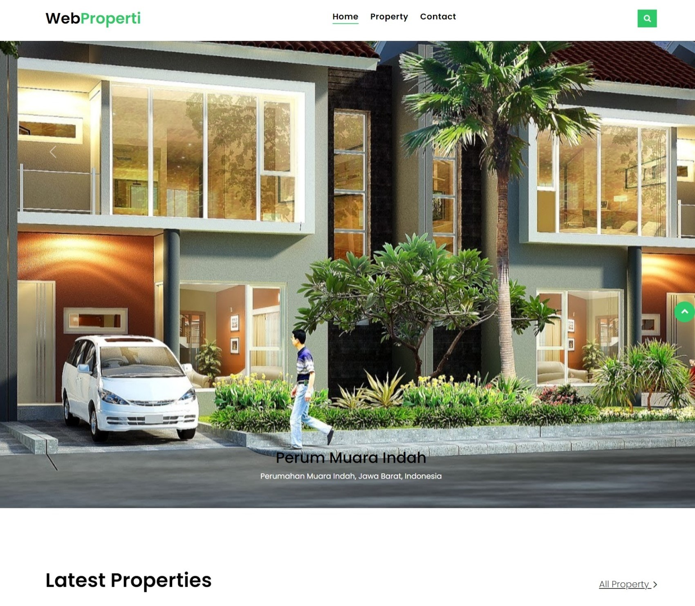

Portofolio
Project Website
Beberapa hasil website yang pernah saya buat sebagai hasil implementasi dari ilmu pemrograman website yang telah saya pelajari.

Website UMKM Kemirimuka 2022
Project ini merupakan projek tugas akhir skripsi saya yang ditunjukan untuk UMKM kelurahan Kemirimuka Depok. Website ini dibangun menggunakan HTML, CSS dan javascript serta menggunkan framework laravel.

Website Properti
Project ini merupakan web properti yang saya kerjakan saat magang di Creative gama studio pada tahun 2021. Website ini dibangun menggunakan HTML, CSS, dan JavaScript dan dibantu menggunakan framework laravel.

Website Pendaftaran pasien baru
Project ini merupakan web yang dibuat pada saat magang di RSUD Biak numfor pada tahun 2021. Website ini dibangun untuk membantu para pasien yang ingin mendaftar menjadi pasien baru di RSUD saat Covid-19.

Website Perhitungan zakat
Project ini merupakan web yang dibuat pada saat kuliah untuk memenuhi tugas akhir mata kuliah pengembangan aplikasi berbasis syariah yang menggunakan bahasa pemrograman php.

SalesForce PT. Mooleh
Project ini merupakan web yang dibuat untuk mempermudah tim internal dari PT. Mooleh terutama tim bagian sales dan telemarketing serta tim dari vendor management dalam mengelola biaya pengiriman vendor.